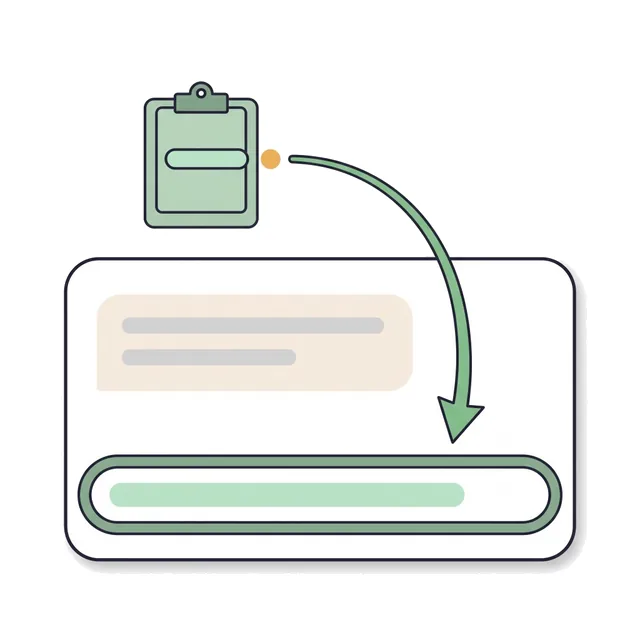
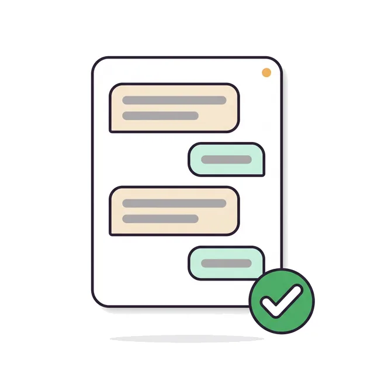

One does the work, others help.
Pick one AI to work on your project. When it gets stuck, it can ask the others to review its work, look at a screenshot, or draft an idea.
Works with Cursor, Claude Code, Codex, the ChatGPT desktop app, Gemini CLI, Ollama, LM Studio and Claude desktop.
Agent Co-op lets the AI apps you already use ask each other for help, right on your computer.
Pick one AI to work on your project. When it gets stuck, it can ask the others to review its work, look at a screenshot, or draft an idea.
No account and no server. Your AI apps pass notes through a folder on your computer.
A note is a suggestion, not an order. Every change still needs your OK in each app.
You don't need to code or open a terminal.
Cursor, Claude Code, Codex or the ChatGPT desktop app all work.

Set up Agent Co-op from github.com/zlatko-lakisic/agent-coop on this computer.

Your AI sets everything up in the chat. It asks which AI should lead and which ones should help.
Prefer to download it yourself?
The first time you open it, your Mac may block it. Open System Settings, then Privacy and Security, and choose to allow the app.
Your main AI does the work. Helpers answer when it asks.
These can work on your project and ask others for help.
These answer questions and review work. Local models run on your own machine.
Support is planned.
Web chat apps in a browser can't read files on your computer, so they can't join.
Using an app that isn't listed? Tell us on GitHub.
Your AI apps pass notes to each other. Nothing changes unless you approve it in that app's own chat.
Files like security keys and password files are always blocked from being shared.
Helpers are told to leave your files alone. Only your main AI makes changes.
Notes are saved on your computer, so don't put passwords or keys in them.
No. You paste one sentence into an AI app you already use, and it walks you through the rest in the chat.
Yes. Agent Co-op is free and open source under the Apache 2.0 license.
Agent Co-op itself doesn't send anything. The notes stay in a folder on your computer. Your AI apps keep working the way they already do.
No. Browser chat apps can't read files on your computer, so they can't join.
Open an issue on GitHub and tell us which app you use. Report an issue